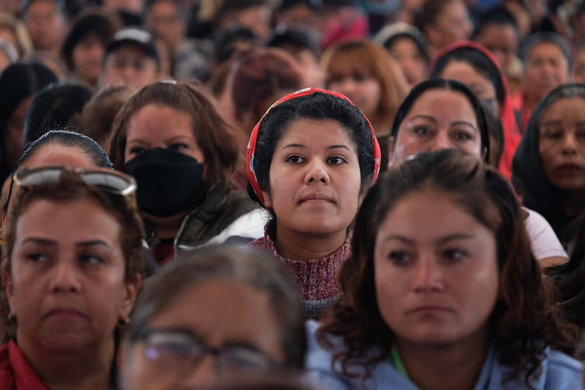

Impacto
Dimensión Cultural: Nuevas Narrativas Audiovisuales
- 8 piezas audiovisuales que cuestionan estereotipos de género
- 500+ personas en audiencias directas de proyección pública
- Exhibición en 3 plataformas digitales y/o espacios culturales
- Cambio positivo del 20% en percepción de estereotipos (encuesta pre–post)
Dimensión Social: Mujeres visibles en la industria
- 15 creadoras y 5 estudios con perfil público profesional en plataforma web interactiva
- 10,000 personas alcanzadas vía redes sociales (Facebook, Instagram, TikTok, YouTube)
- Exposición física/híbrida en espacio cultural del Estado de México
- Directorio interactivo con búsqueda por especialidad, experiencia y ubicación
Dimensión Educativa: Audiencias críticas y formadas
- 150 personas capacitadas en análisis de contenidos con perspectiva de género
- 6 espacios formativos diferenciados: talleres, conversatorios, panel y cineclub
- Materiales didácticos de acceso libre: guías de análisis, presentaciones, lecturas
Dimensión Laboral-Económica: Red y oportunidades
- 30 creadoras activas en red colaborativa con plataforma digital de intercambio
- 5 alianzas estratégicas: UAM, UNAM, casa de cultura/cineteca, Secretaría Cultura/IMCINE, financiador
- 3 encuentros presenciales de networking entre integrantes de la red
- Mínimo 2 oportunidades concretas de financiamiento o producción gestionadas
Territorio de Impacto: 6 Municipios
Prioritarios
El proyecto se implementa en los seis municipios del Estado de México con mayor concentración poblacional y mayor necesidad de intervención cultural con perspectiva de género. Cada municipio albergará al menos una proyección pública y será parte de la estrategia de distribución de los contenidos audiovisuales producidos.
- Cuautitlán Izcalli
- Tlalnepantla
- Naucalpan
- Ecatepec
- Toluca
- Nezahualcóyotl

Mujeres del Edomex: un pilar fundamental en la sociedad y las familias mexiquenses, El Universal.